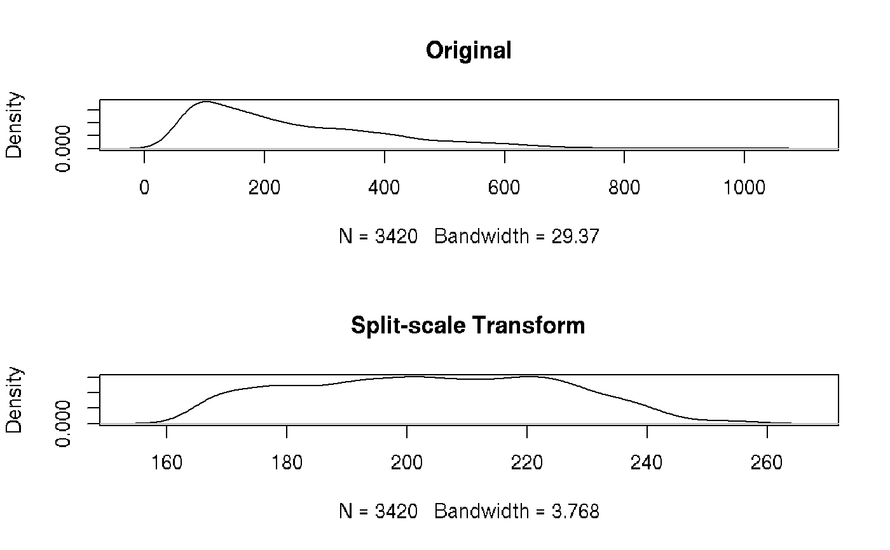

splitScaleTransform.RdThe split scale transformation described by Francis L. Battye [B15] (Figure 13) consists of a logarithmic scale at high values and a linear scale at low values with a fixed transition point chosen so that the slope (first derivative) of the transform is continuous at that point. The scale extends to the negative of the transition value that is reached at the bottom of the display.
splitScaleTransform(transformationId="defaultSplitscaleTransform", maxValue=1023, transitionChannel=64, r=192)
| transformationId | A name to assign to the transformation. Used by the transform/filter integration routines. |
|---|---|
| maxValue | Maximum value the transformation is applied to, e.g., 1023 |
| transitionChannel | Where to split the linear versus the logarithmic transformation, e.g., 64 |
| r | Range of the logarithm part of the display, ie. it may be expressed as the maxChannel - transitionChannel considering the maxChannel as the maximum value to be obtained after the transformation. |
Returns values giving the inverse of the biexponential within a
certain tolerance. This function should be used with care as numerical
inversion routines often have problems with the inversion process due to the
large range of values that are essentially 0. Do not be surprised if you end
up with population splitting about w and other odd artifacts.
Battye F.L. A Mathematically Simple Alternative to the Logarithmic Transform for Flow Cytometric Fluorescence Data Displays. http://www.wehi.edu.au/cytometry/Abstracts/AFCG05B.html.
Other Transform functions:
arcsinhTransform(),
biexponentialTransform(),
inverseLogicleTransform(),
linearTransform(),
lnTransform(),
logTransform(),
logicleTransform(),
quadraticTransform(),
scaleTransform(),
truncateTransform()
data(GvHD) ssTransform <- splitScaleTransform("mySplitTransform") after.1 <- transform(GvHD, transformList('FSC-H', ssTransform)) opar = par(mfcol=c(2, 1)) plot(density(exprs(GvHD[[1]])[, 1]), main="Original") plot(density(exprs(after.1[[1]])[, 1]), main="Split-scale Transform")